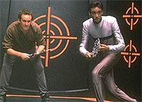
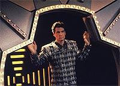
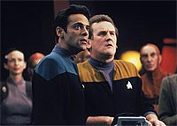
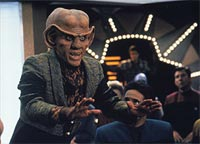
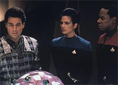

MANCHETE
DO EPISDIO
Histria
tenta enfocar competitividade,
mas abusa de deturpao cientfica
Episdio
anterior | Prximo
episdio
Sinopse:
Data Estelar:
desconhecida.
Na iminncia de "dar o
bote" em uma mulher aliengena de nome Alsia, que ficara viva
recentemente, um vigarista El'Auriano de nome Martus preso por
Odo. Ele acusado de ter aplicado o "golpe do vigrio"
em
um casal.
Em sua cela ele encontra um outro aliengena, de nome Cos. O
aliengena tem em sua posse um estranho dispositivo de jogo ao
qual ele atribui a perda de toda a sua fortuna. Ele joga pela ltima
vez, fica espantado por vencer e morre. Martus fica com o
dispositivo.

Miraculosamente
o casal retira a queixa e ele posto em liberdade. Ele vai ao
Quark's e tenta vender o jogo ao proprietrio, mas o sbito
interesse de Quark e sua aparente mar de sorte faz Martus voltar
atrs. Ele se amiga com uma outra viva, a Bajoriana Roana (que
fica imediatamente atrada por ele), que acaba oferecendo o espao
fsico para que Martus abra o "Clube Martus" direto
competidor do Quark's.
Martus consegue levar Rom para trabalhar com ele, alm de todos
os clientes do Quark. Seu segredo? Vrias unidades de uma verso
tamanho famlia do dispositivo aliengena.
Enquanto isso O'Brien e Bashir se enfrentam em um jogo de
"racquetball". O'Brien perde feio. Coisas estranhas,
altamente improvveis --literalmente impossveis--, comeam a
acontecer na estao.
Para tentar reverter a mar dos seus negcios, Quark manipula
Bashir e O'Brien a entrar em um jogo com apostas com parte dos
lucros destinado aos rfos Bajorianos. Quark recupera os seus
fregueses para o "duelo" entre O'Brien e Bashir.
Enquanto isso, a sorte de Martus parece terminar e Roana (com cimes
das garotas Dabo, entre outras coisas) fecha o clube. Martus tenta
uma ltima cartada oferecendo todos os seus lucros a um
investimento aparentemente rentvel de Alsia.

Dax
detecta uma "perturbao nas leis da probabilidade"
que mxima no clube de Martus, a origem so os dispositivos
tamanho famlia. Dax e Sisko os destroem. Imediatamente Odo
prende Martus, pela acusao original do casal, e Alsia com ele,
que se revela tambm uma vigarista que deu o golpe em Martus.
Quark chega no xadrez e se oferece para pagar a fiana de Martus,
para que ele suma da estao e no volte mais.
Comentrios:
Deep Space Nine chega ao ponto mais baixo desta sua
"trilogia do terror". Peguem suas raquetes e vamos
tentar entender o que houve de errado com esta abismal hora de
televiso.
Primeiramente temos a premissa da tal "mquina de
probabilidade". Acho justo sempre julgarmos premissas
"ditas cientficas" do seguinte modo: primeiro junto a
real cincia, segundo junto a cincia da srie e terceiro
aceitar as regras desta premissa desde que "os fins
justifiquem os meios", em um certo sentido, e tais regras
sejam feitas constantes no curso do episdio. Infelizmente a
premissa do presente episdio falha miseravelmente nos trs
pontos.

A
idia original parece advir da teoria do Caos, s que de forma to
distorcida, irresponsvel e imbecil que chega at a ofender. Em
essncia foi criada uma "caixinha mgica" que serve
para fazer coisas "improvveis" acontecerem. Bem, eu
acho que tal dispositivo no pertence ao universo de Jornada
que, "teoricamente", se preocupa em tratar cincia com
alguma dignidade.
O mais triste que as regras de funcionamento de tal dispositivo
no so claramente estabelecidas e parecem se modificar para
satisfazer o direcionamento da histria (o que leva o roteiro do
episdio ao limiar do amadorismo completo).
Aparentemente um replicador pode replicar no somente
"caixinhas mgicas" como "caixinhas mgicas
TAMANHO FAMLIA". Interessante, MUITO interessante. Os
fragmentos de "m cincia" advindos desta premissa so
to absurdos que me fazem rir do que no deveria.
Discutida a premissa, o episdio gira em torno da antiga histria
da "rivalidade de dois trapaceiros", no caso Quark e
Martus, a qual leva MUITO TEMPO para entrar em foco, dobrada pela
latente rivalidade entre O'Brien e Bashir.
Acredito que o fato de Martus ser El'Auriano desnecessrio
para o episdio, talvez uma herana dos rascunhos iniciais da
histria, mais um podre desta bagunada colcha de retalhos
chamada de episdio.

A
interao de Bashir e O'Brien a melhor coisa do episdio e
ainda assim no faz muito por mim. Eu a acho aqui um pouco forada
e excessiva em partes, muito aqum daquilo de que os dois so
capazes. E este lado da histria fica totalmente solto, sem
fechamento nenhum. Que zona de roteiro, hein?
(O interessante que a "mquina de probabilidade" no
essencial para contar tal histria. Martus poderia ser apenas
um "comerciante" abrindo um bar em frente ao Quark's, s
a ausncia desta premissa imbecil j daria uma outra vida ao
episdio. No iria salv-lo, mas ao menos ele deixaria de ser
este travesti de televiso aqui apresentado.)
Para tal histria funcionar, o roteiro deve produzir afiados dilogos,
situaes engraadas e reviravoltas a uma taxa alta e
constante. Infelizmente no isto que acontece. O roteiro
pobre e pouco inspirado, falta direcionamento cmico ao episdio
e a maioria dos atores parece infernalmente entediada com o episdio.
O resultado previsvel, lento e arrastado.
A caracterizao de Quark e O'Brien diante das circunstncias
est correta. Bashir tambm est bem (talvez um pouco imaturo
em certos pontos, mas foi legal ver em primeira mo a sua
habilidade com a raquete). Keiko e Rom tambm esto OK. O resto
dos personagens est terrvel --especialmente Martus--
aparentemente em um estado de coma coletivo.

A
trama, alm de herdar todos os problemas da "mquina de
probabilidade", tem um srio problema: Por que diabos o Odo
no revistou o aliengena preso e confiscou a "mquina de
probabilidade" inicialmente? fcil de consertar (Martus
podia ter ganho a mquina em um jogo qualquer, por exemplo), mas
com uma premissa to furada como esta, este ponto j comea a
arrancar gargalhadas involuntrias.
A direo de David Livingston, ainda que inventiva como sempre
(reparem na cena em que Quark e Sisko tomam o elevador por
exemplo), no conseguiu inflamar devidamente a comdia e o
resultado final foi um episdio aptico e sem foco.
A maioria dos regulares nem honrar o pagamento honrou. Shimerman,
Meaney e El Fadil estiveram bem, mas o resto pareceu contaminado
com o "tdio Sarandoniano".
A performance de Chris Sarandon como Martus foi abismal, dando a
entender que o ator estava completamente desmotivado (e/ou
entediado) com o papel. Ele foi o grande responsvel pelas cenas
entre Martus e Quark no funcionarem de jeito algum. Chao e Grodnchik
se saram bem com o material. Os demais convidados ficaram no
"neutro".
Alguns outros pequenos bons pontos espalhados: O'Brien fazendo
"cooper" no Promenade, Bashir preocupado com a sade de
O'Brien, Bashir procurando uma garrafa de ketchup que funcionasse,
Quark manipulando Bashir e O'Brien a realizar a partida e a
reviravolta ao final, em que Alsia tambm revelada como uma
vigarista.
Para a platia feminina tivemos esta semana O'Brien sem camisa
duas vezes (mostrando que ele bastante sensual para a sua
esposa --o que bem legal) e Bashir com uma indumentria que
parecia identificar a sua prpria religio. (Mas como de costume
tambm tivemos uma garota Dabo com os seios seminus.)
O ngulo da trama envolvendo Roana foi um total desperdcio de
filme.
Sou s eu, ou mais algum acha impossvel qualquer tipo jogo
(ao menos nos termos sugeridos) naquela "quadra
high-tech" cheia de planos inclinados e cantos vivos?
"Rivals" eleva a "imbecilidade cientfica"
em Jornada a um novo patamar, nos explicando detalhadamente
como NO fazer uma comdia no processo. De forma geral, um dos
mais confusos, mal-acabados e um dos piores episdios de toda a srie.
Citaes
Keiko - "You had a
game?"
("Vocs fizeram um jogo?")
O'Brien - "No, HE had a game. I just kinda stumbled around
the court for 90 minutes making a complete [fool] of myself."
("No, ELE fez um jogo. Eu s fiquei correndo em volta da
quadra por 90 minutos fazendo um tremendo papel de bobo."
Quark - "Never trust a man wearing a better suit than your
own."
("Nunca confie num homem vestindo um termo melhor que o
seu.")
Trivia:
 Presena de Keiko e Rom.
Presena de Keiko e Rom.
Participao de Chris Sarandon como
o El'Auriano Martus. Christopher Sarandon (nascido em 24/07/1942
em Beckley, West Virginia, EUA) foi casado entre 1968 e 1979 com a
(tambm) atriz Susan (Tomalin) Sarandon. Participou de filmes
como "Protocol", "Fright Night" e "The
Princess Bride" e sries como "Felicity",
"Chicago Hope", "The Practice" e "Picket
Fences".
Neste episdio foi pela primeira vez
nomeada a raa de Guinan (e tambm de Martus), os El'Aurianos.
O conceito original do episdio veio
da continua tentativa de diversos roteiristas de tentar oferecer
um "pitch" sobre teoria do caos (normalmente vendida ao
pblico leigo usando o argumento das "butterfly's
wings" --que foi o ttulo original do "pitch" de
Jim Trombetta).
Originalmente teramos Quark com um
dispositivo (encontrado nas escavaes de uma antiga civilizao)
que lhe traria grande sorte as custas do azar das outras pessoas.
No havia o personagem Martus e muito menos o conflito entre
Quark e Martus nesta idia original.
A idia de Martus foi inicialmente um
efeito colateral de uma possvel participao de Whoopi
Goldberg como Guinan que no se concretizou. Martus (ou na
realidade o seu predecessor no processo criativo do episdio)
seria possivelmente um filho mal-encaminhado da El'Auriana. Quando
Goldberg no conseguiu um espao em sua agenda, o personagem foi
reestruturado, mas permaneceu um El'Auriano.
Martus, que foi concebido
originalmente como um inimigo recorrente de Quark, nunca voltou
devido a fraca qumica entre Shimerman e Sarandon.
O cenrio da
quadra de "racquetball" foi considerado muito caro, e
difcil de filmar, e no foi mais usado durante a srie.
Ficha
tcnica:
Histria de Gabe Essoe &
Kelley Miles
Roteiro de Frederick Rappaport
Direo de David Livingston
Exibido em 03/01/1994
Produo: 031
Elenco:
Avery Brooks como
Benjamin Lafayette Sisko
Ren Auberjonois como Odo
Nana Visitor como Kira Nerys
Colm Meaney como Miles Edward O'Brien
Siddig El Fadil como Julian Subatoi Bashir
Armin Shimerman como Quark
Terry Farrell como Jadzia Dax
Cirroc Lofton como Jake Sisko
Elenco convidado:
Rosalind Chao como Keiko O'Brien
Barbara Bosson como Roana
K. Callan como Alsia
Max Grodnchik como Rom
Albert Henderson como Cos
Chris Sarandon como Martus